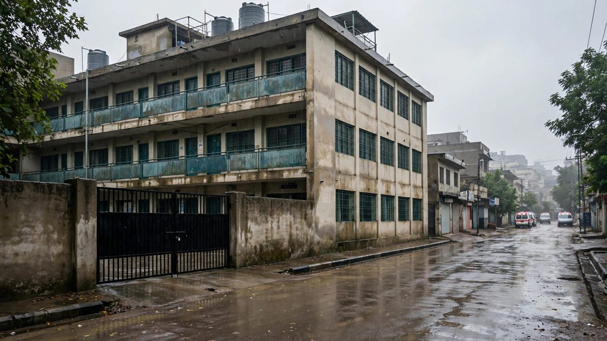

L'effondrement du toit d'une école à Peshawar tue au moins 34 enfants et une enseignante
Le toit est tombé pendant les cours du matin dans une école privée du quartier de Dir Colony, à Peshawar. Le bilan est monté à au moins 34 enfants et une enseignante, plus de 50 personnes ont été blessées, les secours ont déblayé les décombres et les familles préparent des prières funéraires collectives. Le bilan reste d'au moins 34 enfants et une enseignante, et le gouverneur de la province a maintenant ordonné un audit de sécurité de toutes les écoles de la province. Il a annoncé une indemnisation de 1 million de roupies pour chaque famille endeuillée et de 200 000 roupies pour chaque personne blessée. La police a maintenant enregistré une affaire pénale contre les propriétaires, les actionnaires et l'entrepreneur, avec des allégations de matériaux de mauvaise qualité et d'alertes ignorées sur le bâtiment. Les autorités provinciales ont maintenant ordonné l'inspection de toutes les écoles privées de la province, avec des comités de district qui doivent remettre leurs conclusions sous trois jours.

Points clés
- Mis à jour à 16 h 50 UTC, vendredi : les autorités provinciales ont ordonné l'inspection de toutes les écoles privées du Khyber Pakhtunkhwa, a rapporté l'Associated Press vendredi 16 octobre.
- Les inspections doivent couvrir les locaux détenus en propre comme les locaux loués.
- Les autorités ont verrouillé le bâtiment Al-Khair, et des enquêteurs y étaient attendus plus tard vendredi.
Mise à jour : la province ordonne l'inspection de toutes les écoles privées, avec des conclusions sous trois jours
Mis à jour à 16 h 50 UTC, vendredi : les autorités provinciales ont ordonné l'inspection de toutes les écoles privées du Khyber Pakhtunkhwa, a rapporté l'Associated Press vendredi 16 octobre. Une ordonnance gouvernementale vue par l'Associated Press charge le département provincial de l'éducation de créer des comités de district pour inspecter les bâtiments des écoles privées dans toute la province et remettre conclusions et recommandations sous trois jours.
Les inspections doivent couvrir les locaux détenus en propre comme les locaux loués. Les inspecteurs doivent vérifier toits, plafonds, murs, colonnes, poutres, fondations et escaliers, demander une évaluation technique urgente là où elle est nécessaire et classer chaque bâtiment comme sûr, à réparer ou à améliorer, ou potentiellement dangereux.
Les autorités ont verrouillé le bâtiment Al-Khair, et des enquêteurs y étaient attendus plus tard vendredi. La porte-parole du gouvernement, Samar Haroon Bilour, a exprimé sa tristesse dans un message vidéo vendredi et a appelé les parents à signaler les écoles installées dans des bâtiments faibles dans leur structure.
Des proches ont dit que des alertes avaient eu lieu avant l'effondrement. Mohammad Zaman a dit à l'Associated Press que lui et d'autres proches s'étaient plaints au propriétaire de l'eau de pluie qui s'infiltrait dans les salles de classe et avaient averti que l'état du bâtiment pouvait mener à une tragédie. Ses neveux Abdul, 9 ans et en deuxième année, et Abuzar, 10 ans et en troisième année, ont été tués.
Le porte-parole des services d'urgence, Bilal Faizi, a dit que le toit effondré était une structure traditionnelle en boue et en briques, que certains enfants coincés sont morts par suffocation et que les secouristes ont sorti au moins 40 enfants vivants. Reuters a rapporté vendredi que les familles de Dir Colony pleuraient les 34 élèves et l'enseignante tués, et que la plupart des 45 enfants blessés étaient sortis après les premiers soins, trois restant dans un état critique.
Mise à jour : la plainte de la police nomme les propriétaires, les actionnaires et l'entrepreneur
Mis à jour à 08 h 01 UTC, vendredi : la police a enregistré une affaire pénale contre les propriétaires, les actionnaires et l'entrepreneur en construction de l'école Al-Khair à Dir Colony, ont rapporté The News et l'Islamabad Post. Le premier rapport d'information a été déposé au poste de police d'Agha Mir Jani Shah au nom de l'État en vertu de l'article 322 du Code pénal pakistanais, l'infraction de mort causée sans intention de tuer. La police a dit que des efforts étaient en cours pour arrêter les suspects nommés dans l'affaire.
Le rapport allègue que des matériaux de mauvaise qualité ont été utilisés dans un bâtiment en mauvais état et impropre à servir d'école. Il dit que des plaintes sur les murs et les toits avaient déjà été déposées, et que des enfants avaient aussi fait part de leurs inquiétudes, mais que la direction n'a pas agi. Le rapport fait état de 30 enfants et une enseignante morts et de 52 personnes blessées. C'est le chiffre inscrit dans la plainte de la police. Le comptage hospitalier ultérieur de cet article, au moins 34 enfants et une enseignante, reste valable. Le rapport dit aussi que l'école se trouvait sur un terrain appartenant à Waheed et Javed, loué en 2024, et que le bâtiment a été construit après la location.
Mise à jour : le gouverneur annonce une indemnisation pour les familles
Mis à jour à 06:27 UTC, vendredi : le gouverneur Faisal Karim Kundi a assisté jeudi aux prières funéraires pour les victimes et a annoncé une indemnisation de 1 million de roupies pour chaque famille endeuillée et de 200 000 roupies pour chaque personne blessée, ont rapporté Dawn et Kashmir English. Il a dit que l'enquête commencerait par établir qui a délivré le certificat de non-objection qui a permis à l'école de fonctionner.
Tard dans la nuit de jeudi, le département provincial des Ressources humaines a créé un comité d'enquête dirigé par le secrétaire aux Transports, Zubair Ahmed, avec l'ingénieur en chef Jamshid Ali Khan, du département de la Communication et des Travaux, a rapporté Dawn. Le comité doit examiner le bâtiment, la qualité de sa construction et toute négligence de la direction de l'école ou des régulateurs, et remettre son rapport au secrétaire en chef dans un délai de sept jours. Le bilan reste d'au moins 34 enfants et une enseignante.
Mise à jour : le gouverneur ordonne un audit de sécurité des écoles de toute la province
Mis à jour à 16 h 21 UTC, jeudi : le gouverneur de Khyber Pakhtunkhwa, Faisal Karim Kundi, a ordonné un audit de sécurité de toutes les écoles de la province après l'effondrement à Peshawar, pour identifier les risques et assurer que des mesures correctives soient prises là où elles sont nécessaires, ont rapporté la BBC et WE News English. Il a dit que la sécurité des enfants ne pouvait pas être compromise.
Le chef de la police, Mian Saeed, a décrit l'effondrement comme un cas de négligence grave, a averti que le bâtiment restait extrêmement dangereux et a demandé aux gens de s'en éloigner. Il a dit que les enquêteurs examineraient de possibles infractions aux règles de construction. Le responsable des urgences Arif Khattak a dit à la BBC que l'école se trouvait dans un bâtiment construit à titre temporaire, et Saeed a dit que des salles de trois étages sont tombées, avec environ 30 élèves dans la salle du haut, 40 dans celle du milieu et 45 au rez-de-chaussée.
Le comptage hospitalier de la BBC a situé le bilan à au moins 33 élèves et une enseignante, l'hôpital Lady Reading signalant 32 enfants et une enseignante morts et l'hôpital Naseerullah Khan Babar Memorial signalant un enfant de plus. Le comptage général ultérieur d'au moins 34 enfants et une enseignante reste le bilan officiel le plus élevé rapporté jusqu'ici.
Mise à jour : le bilan monte à 34 enfants et une enseignante
Mis à jour à 13 h 47 UTC, jeudi : le bilan est monté de nouveau, à au moins 34 enfants et une enseignante, selon le comptage le plus récent de l'Associated Press à partir de responsables de l'hôpital et des secours. Plus de 50 autres personnes ont été blessées. Les enfants avaient entre 6 et 12 ans, et le plus âgé avait 14 ans, a dit le porte-parole de l'hôpital Lady Reading, Mohammad Asim.
Le porte-parole des services d'urgence, Bilal Faizi, a dit que toutes les personnes coincées sous les décombres avaient été dégagées et que les débris avaient été enlevés. Il a dit à l'Associated Press que les toits de deux salles de classe sont tombés alors que des enfants de deuxième et troisième année se trouvaient à l'intérieur avec leurs enseignantes, que les ambulances et les équipes de secours sont arrivées à l'école en cinq minutes et que près de 100 secouristes ont participé au travail. Il a attribué à l'évacuation rapide le fait d'avoir sauvé au moins 40 vies.
Alors que le deuil se répandait dans Dir Colony, les haut-parleurs des mosquées ont appelé les habitants à assister à des prières funéraires collectives au cimetière voisin de Rehman Baba. La plupart des enfants tués vivaient dans le quartier, ont dit des habitants, et des ambulances ont été vues ramenant les corps de l'hôpital vers les maisons des familles.
La police a dit que le propriétaire arrêté de l'école, Mohammad Khan, a attribué l'affaiblissement d'un des toits aux pluies de cette semaine. L'enquête est toujours en cours. Le bilan précédent de 32 enfants, dans la mise à jour ci-dessous, a été remplacé par ce comptage plus récent.
Mise à jour : le bilan monte à 32 enfants
Mis à jour à 11 h 10 UTC, jeudi : le bilan est monté à au moins 32 enfants et une enseignante, selon des comptages ultérieurs de responsables de l'hôpital et des secours rapportés par CNN et Sky News. Le porte-parole de l'hôpital Lady Reading, Mohammad Asim, a dit que 12 filles figurent parmi les morts et que trois enfants sont dans un état critique avec des blessures à la tête. Les responsables des secours ont dit que le travail à l'école a duré quatre à cinq heures après l'effondrement de 8 h 48, heure locale, et ont confirmé que toutes les personnes coincées avaient été dégagées. Les proches présents à l'école et à l'hôpital ont exigé que les responsables soient punis. Le premier bilan de 28 enfants, dans le compte rendu ci-dessous, a été remplacé par ce comptage officiel ultérieur.
Au moins 28 enfants et une enseignante ont été tués jeudi 15 octobre lorsque le toit d'une école privée s'est effondré pendant les cours du matin à Peshawar, capitale de la province de Khyber Pakhtunkhwa, dans le nord-ouest du Pakistan. Plus de 50 autres personnes ont été blessées, a dit un porte-parole de l'hôpital. Six filles figurent parmi les morts.
L'école, l'Al-Khair Education Centre, se trouve à Dir Colony, un quartier dense de la ville. Un responsable des secours a dit que le toit d'un étage supérieur est tombé sur l'étage du dessous, qui s'est ensuite effondré sur les salles de classe. Tous les enfants tués ou blessés avaient 13 ans ou moins, selon Mohammad Asim, porte-parole de l'hôpital Lady Reading, où la plupart des victimes ont été emmenées.
Le chef de la police, Mian Saeed, a dit que 110 élèves se trouvaient dans trois salles de classe au moment de l'effondrement. Le responsable districtal des urgences, Iftikhar Khan, a dit que les équipes avaient sorti au moins 45 enfants des décombres dans les premières heures. Quelques heures plus tard, les responsables des secours ont dit que toutes les personnes coincées étaient sorties et que les équipes passaient au déblaiement.
Les voisins sont arrivés les premiers
Les habitants du quartier ont été parmi les premiers à creuser et à sortir les enfants. Des témoins ont dit à l'Associated Press que les secouristes sont arrivés quelques minutes après l'alerte. Les ambulances circulaient dans les rues étroites autour de l'école pendant que des parents attendaient dehors et à l'hôpital Lady Reading, en quête de nouvelles de leurs enfants.
L'hôpital a déclaré l'état d'urgence. Asim a dit que certains blessés étaient dans un état critique. Une enseignante blessée, Mahwish Zaman, a dit à l'Associated Press depuis son lit d'hôpital que l'école comptait environ 1 200 élèves, de la maternelle à la cinquième année. Elle a dit qu'elle se trouvait dans sa salle de classe quand le toit est tombé et qu'elle s'est réveillée plus tard à l'hôpital.
Un habitant, Samiullah Khan, a dit qu'il s'est précipité à l'école dès la nouvelle apprise et qu'il a aidé à sortir trois filles. Son propre fils, élève de l'école, a survécu parce qu'il était sorti de sa salle pour boire de l'eau, a dit Khan.
Propriétaire arrêté, cause encore examinée
La cause de l'effondrement fait toujours l'objet d'une enquête. Le chef de la police de Peshawar, Saeed Ahmed, a dit que le bâtiment était faible dans sa structure et que le propriétaire de l'école avait été arrêté. Le chef de la police Mian Saeed a dit à Reuters que le toit pesait trop lourd pour la structure faible qui le portait. Un responsable des secours a dit à CNN que de fortes pluies avaient fait tomber le toit. Les autorités n'ont pas encore donné de conclusion finale, et ces versions n'ont pas été mises en accord.
Le gouvernement provincial a dit qu'un comité a été formé pour enquêter sur l'effondrement et rendre un rapport sur sa cause. Le gouverneur de Khyber Pakhtunkhwa, Faisal Karim Kundi, a demandé ce rapport et a dit aux responsables de donner aux enfants blessés les meilleurs soins possibles.
Le président Asif Ali Zardari et le Premier ministre Shehbaz Sharif ont tous deux exprimé leur tristesse face aux morts et présenté leurs condoléances aux familles. Zardari a demandé une enquête complète et a dit que les bâtiments scolaires doivent être contrôlés selon les normes de sécurité pour qu'un tel effondrement ne se reproduise pas.
Les effondrements de bâtiments sont fréquents au Pakistan. L'Associated Press et CNN notent que les règles de construction sont peu appliquées et que beaucoup de bâtiments sont construits avec des matériaux de mauvaise qualité. Pour les familles de Dir Colony, ce problème plus large est maintenant une liste de noms dans un hôpital, et une école qui n'ouvrira pas ses portes vendredi.
Cette histoire sera mise à jour lorsque les autorités confirmeront d'autres noms, causes et bilans.
Chronologie
- Oct 15, 2026Le toit de l'Al-Khair Education Centre s'effondre pendant les cours du matin à Dir Colony, Peshawar, et coince des élèves dans trois salles de classe.
- Oct 15, 2026L'hôpital Lady Reading confirme au moins 28 enfants et une enseignante morts et plus de 50 blessés, tous les enfants âgés de 13 ans ou moins.
- Oct 15, 2026Les responsables des secours disent que toutes les personnes coincées ont été dégagées. La police arrête le propriétaire de l'école et le gouvernement provincial forme un comité d'enquête.
- Oct 15, 2026Des comptages ultérieurs de l'hôpital et des secours portent le bilan à au moins 32 enfants et une enseignante. Douze filles figurent parmi les morts et trois enfants sont dans un état critique avec des blessures à la tête.
- Oct 15, 2026Un comptage ultérieur de l'Associated Press porte le bilan à au moins 34 enfants et une enseignante, avec plus de 50 blessés. Les secours disent que les décombres sont déblayés, et les haut-parleurs des mosquées appellent les habitants à des prières funéraires collectives au cimetière de Rehman Baba.
- Oct 15, 2026Le gouverneur Faisal Karim Kundi ordonne un audit de sécurité de toutes les écoles de Khyber Pakhtunkhwa. Le chef de la police Mian Saeed qualifie l'effondrement de négligence grave et avertit que le bâtiment reste extrêmement dangereux.
- Oct 15, 2026Le gouverneur Faisal Karim Kundi assiste aux prières funéraires, annonce une indemnisation de 1 million de roupies pour chaque famille endeuillée et de 200 000 roupies pour chaque personne blessée, et dit que l'enquête établira d'abord qui a délivré à l'école son certificat de non-objection. Un comité d'enquête est créé le soir même pour rendre son rapport au secrétaire en chef dans les sept jours.
- Oct 16, 2026La police enregistre une affaire pénale au poste d'Agha Mir Jani Shah contre les propriétaires de l'école, les actionnaires et l'entrepreneur en construction en vertu de l'article 322 du Code pénal pakistanais. Le premier rapport d'information allègue des matériaux de mauvaise qualité et dit que les plaintes antérieures sur les murs et les toits, y compris celles des enfants, sont restées sans réponse.
- Oct 16, 2026Les autorités provinciales ordonnent l'inspection de toutes les écoles privées du Khyber Pakhtunkhwa. Les comités de district doivent vérifier toits, plafonds, murs, colonnes, poutres, fondations et escaliers dans les bâtiments détenus et loués, classer chaque bâtiment comme sûr, à réparer ou potentiellement dangereux, et rendre leur rapport sous trois jours.
Sources
- Associated Press via KSMU: School roof collapse kills at least 29, injures more than 3 dozen in Pakistan
- Reuters via The Business Standard: 27 students, one teacher dead as Pakistan school roof collapses
- CNN: At least 28 children killed after school roof collapses in Pakistan
- Sky News via Hello Rayo: At least 32 children killed in Pakistan school collapse
- DevDiscourse: Pakistan school roof collapse kills at least 32 children and a teacher
- Associated Press via The Reflector: School roof collapse in Pakistan kills at least 35 and injures more than 50
- WE News English: Peshawar School Roof Collapse Kills 34 Students, One Teacher
- BBC via People Daily: At least 33 pupils and teacher killed after school roof collapses in Pakistan
- WE News English: Peshawar School Tragedy: Governor Orders Province-Wide Safety Inspections
- Dawn via Rise Celestial Studios: Teacher, 30 students killed in Peshawar school roof collapse
- Kashmir English: Peshawar School tragedy: Governor announces Rs10 lakh
- The News: Peshawar school tragedy: FIR alleges use of substandard construction materials
- Islamabad Post: Peshawar school tragedy: Case registered against owners, shareholders and contractor
- Associated Press via LA Post: Pakistan orders school inspections as relatives say they warned of risks before deadly collapse
- Reuters: Devastated families mourn children killed by Pakistan school roof collapse